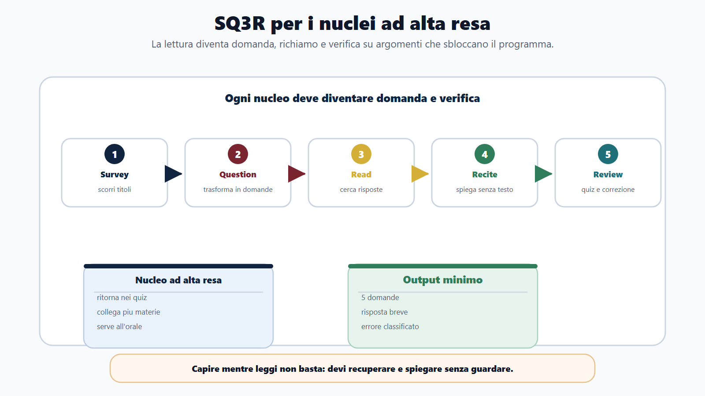
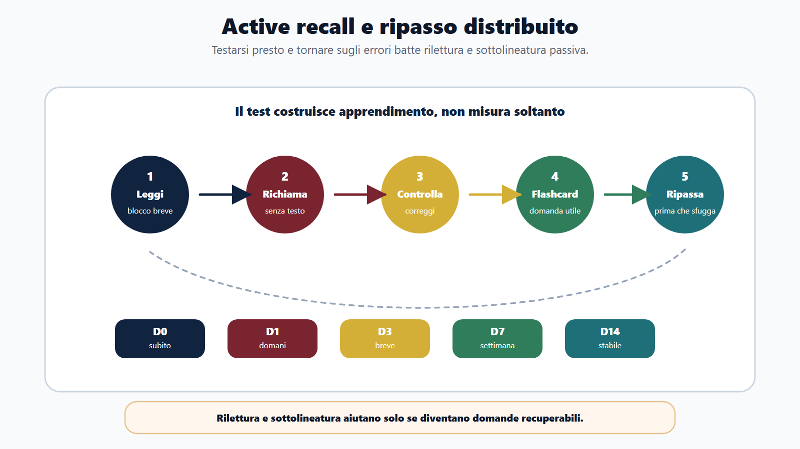
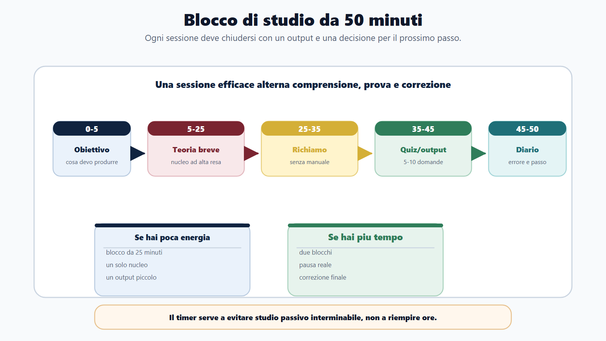
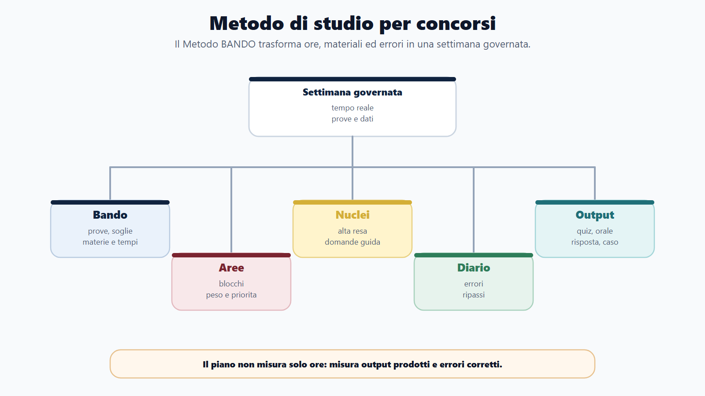
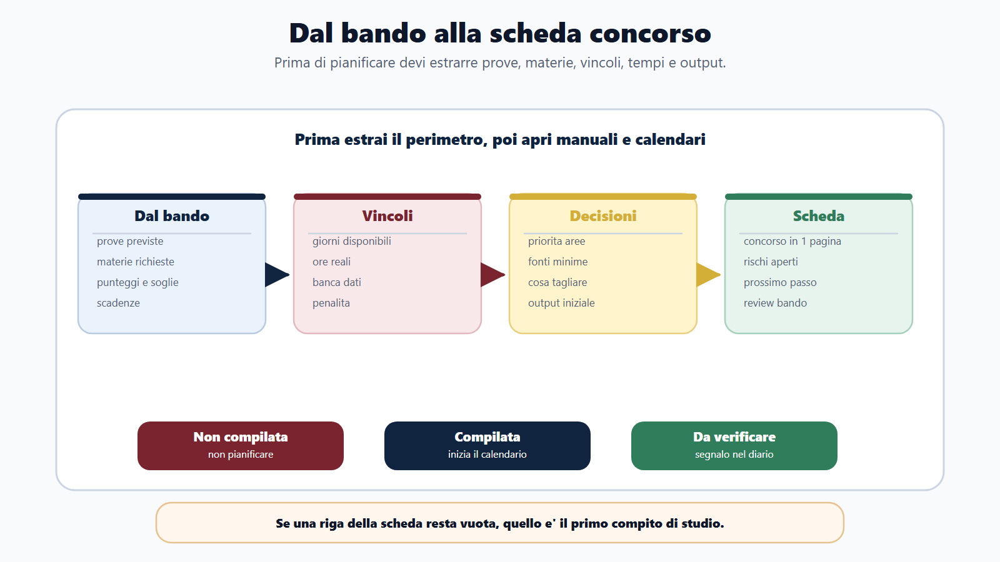
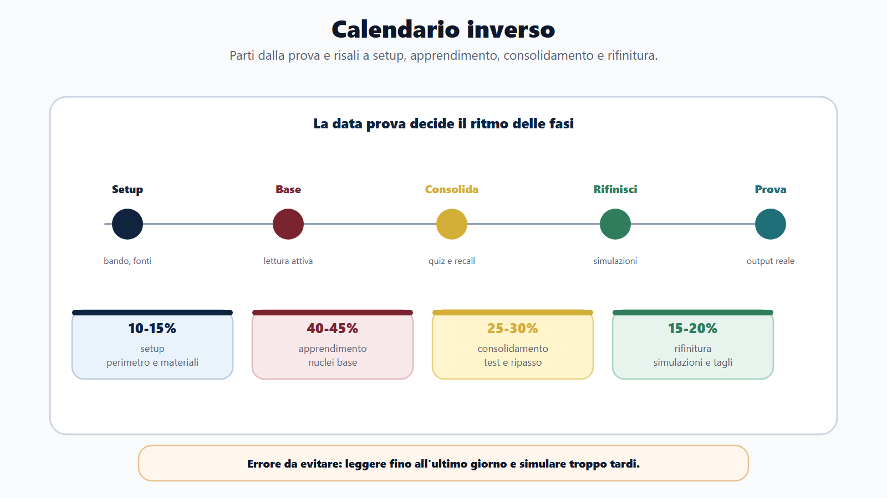

VOL-01 · Capitolo 13
Parte III · Allenarsi come in prova
Metodo di studio
per concorsi
Preparare un concorso non significa accumulare ore. Significa usare quelle ore per imparare a fare ciò che la prova chiederà: recuperare, distinguere, scrivere, esporre e correggere.
Schema
Sq3r nuclei alta resa

Schema
Active recall ripasso distribuito

Schema
Blocco studio 50 minuti

Schema
Mappa metodo studio bando

Schema
Dal bando alla scheda concorso

Schema
Calendario inverso

01 · Il problema
Studiare tante ore non è un piano
Molti partono dal manuale perché è visibile: si compra, si apre, si sottolinea. Nei primi giorni sembra di avanzare. Dopo qualche settimana il programma resta enorme, le scadenze si avvicinano e i quiz mostrano lacune non previste. Manca una sequenza, non un materiale.
Che cos’è il metodo di studio
È la sequenza con cui trasformi il bando in settimane governate: che cosa leggere, che cosa trasformare in domanda, quando ripassare, quando fare quiz, quando simulare, quando tagliare e quando recuperare.
A che serve in prova
La prova non chiede di riconoscere un testo già letto. Chiede di recuperare, applicare, distinguere opzioni, scrivere o esporre. Senza metodo accumuli familiarità; con il metodo produci prestazioni misurabili.
Confondere quantità e strategia. Molte ore non migliorano il risultato se non sono collegate al bando, alle prove e agli errori da correggere.
02 · BANDO
Cinque lettere, cinque decisioni di studio
Questa mappa va usata ogni settimana. Se ti senti bloccato, non aggiungere subito un altro manuale: torna alla sequenza.
| Che cosa fai | Prodotto | Se la salti | |
|---|---|---|---|
| B — Bando | Chiedi che cosa devi saper fare il giorno della prova, non che cosa c’è da leggere. | Scheda concorso in una pagina. | Studi contenuti corretti ma non prioritari per quella prova. |
| A — Aree | Dividi il programma in blocchi omogenei, con peso, priorità e funzione. | Mappa aree, non lista piatta di materie. | Tratti ogni capitolo come obbligatorio allo stesso modo. |
| N — Nuclei | Scegli gli argomenti che sbloccano altri argomenti e tornano in prova. | Lista nuclei ad alta resa. | Segui l’ordine di pagina del manuale. |
| D — Diario | Registri tempo, attività, errori e prossimo passo. | Traccia settimanale visibile. | Ripeti gli stessi sbagli senza vederli. |
| O — Output | Produci quiz, risposta, caso, orale, simulazione senza guardare il testo. | Prova della padronanza. | Confondi «aver letto» con «saper fare». |
Non si studia prima di aver capito che cosa il concorso richiede davvero.
Se il concorso prevede preselettiva a quiz, scritto teorico-pratico e orale, non puoi studiare come per un concorso solo per titoli. Se esiste una banca dati ufficiale, il piano cambia. Se sono previste penalità, cambia la strategia di simulazione.
03 · Bando
Cinque informazioni prima del manuale
Il bando è la mappa del concorso. Estrai requisiti, scadenze e iscrizione, tipologia delle prove, materie, criteri di valutazione, punteggi, penalità e soglie. Queste informazioni cambiano il metodo, non solo il calendario.
| Campo della scheda | Perché decide lo studio |
|---|---|
| Ente, profilo, giorni, ore realistiche | Fissano profondità e tagli. Un piano su ore ideali si rompe alla prima settimana. |
| Prove previste | Quiz, scritto, caso, orale: ciascuna misura cose diverse e richiede output diversi. |
| Materie ad alto peso e materie deboli | Non tutte valgono allo stesso modo: alcune eliminano, altre sono accessorie. |
| Banca dati, penalità, soglie | Se c’è banca dati o penale per errore, simulazione e strategia cambiano. |
| Passaggi amministrativi aperti | Iscrizione, ricevuta, comunicazioni: senza questi, lo studio può restare inutile. |
Non basta scrivere «diritto amministrativo». Devi capire se la prova chiede definizioni, procedure, casi, collegamenti o rapidità nel riconoscere la risposta corretta.
04 · Aree
Dal programma a blocchi, dalla data indietro
Un’area è un blocco omogeneo: costituzionale, amministrativo, impiego, trasparenza, contabilità, contratti, informatica, inglese, logica, scritto o orale. Ogni area ha un peso, una priorità e una funzione. Il calendario parte dalla prova e torna indietro.
Setup 10–15%
Bando, fonti, materiali, calendario, griglia aree. Senza questo, ogni pagina è opinione.
Base 40–45%
Lettura attiva, appunti minimi, prime domande. Qui si costruisce il nucleo, non si sottolinea tutto.
Consolidamento 25–30%
Flashcard, richiamo, quiz, ripasso distribuito. Il test entra prima della sicurezza.
Rifinitura 15–20%
Simulazioni, drill, recupero errori, orale. Non è il momento di aprire un altro manuale.
Restare troppo a lungo nella lettura, oppure arrivare alle simulazioni senza basi. Le quote non sono una legge: servono a proteggere entrambi i passaggi.
05 · Nuclei
SQ3R: leggere per verificare
Un nucleo è un argomento che sblocca molti altri. Il procedimento collega termini, responsabile, partecipazione, accesso, motivazione e provvedimento. Le fonti aiutano Costituzione, atti, gerarchia e competenze. Non è solo «un capitolo importante»: è il punto in cui la preparazione diventa riutilizzabile.
| Fase | Che cosa fai | Output minimo |
|---|---|---|
| Survey | Scorri titoli, parole chiave, struttura. | Mappa rapida del capitolo. |
| Question | Trasformi i titoli in domande: chi individua il responsabile? Che succede se manca? | Lista di domande. |
| Read | Leggi cercando risposte, non sottolineando tutto. | Risposte sintetiche. |
| Recite | Ripeti senza testo. Capire mentre leggi non è ricordare in prova. | Spiegazione a voce o per iscritto. |
| Review | Verifichi con quiz, flashcard o mini-caso. | Errore classificato o risposta corretta. |
06 · Richiamo
Il test costruisce l’apprendimento
Il richiamo attivo consiste nel recuperare un’informazione senza guardare il testo. È scomodo perché mostra subito ciò che non sai. Proprio per questo funziona: il test non serve solo a misurare la preparazione, serve a costruirla.
Ciclo in sei passi
Leggi un blocco breve. Chiudi il manuale. Scrivi o ripeti tre punti. Controlla. Correggi. Trasforma in flashcard o domanda. Non aspettare di sentirti pronto: se aspetti, farai quiz troppo tardi.
Ripasso distribuito
Torni su definizioni lente, differenze tra istituti, eccezioni, sequenze, errori dei quiz, orali confusi. Se la risposta è sbagliata o lenta, torna presto. Se è rapida, programmala più avanti.
«Prima studio tutto, poi faccio quiz». Nei concorsi questo ordine è rischioso. I quiz e le domande devono entrare presto, perché rivelano come il bando trasforma la materia in prova.
07 · Flashcard e blocco
Cinquanta minuti, quattro momenti
Una flashcard utile non chiede solo «che cos’è?». Chiede differenza, sequenza, eccezione, confronto, caso, orale. La sessione ideale non è «leggo per due ore»: alterna teoria breve, richiamo, quiz o domanda, diario.
| Minuti | Attività | Perché |
|---|---|---|
| 0–5 | Obiettivo della sessione. | Senza scopo, la lettura diventa passiva. |
| 5–25 | Lettura attiva di un nucleo. | Un blocco breve si può verificare; un capitolo intero no. |
| 25–35 | Richiamo senza testo. | Mostra subito lacune e confusioni. |
| 35–45 | Cinque-dieci quiz o una risposta breve. | Collega lo studio al formato di prova. |
| 45–50 | Diario: errore, ripasso, prossimo passo. | Senza traccia resta una sensazione. |
Con poca energia usa blocchi da 25 minuti. Con più tempo unisci due blocchi con una pausa reale. Il punto non è idolatrare il timer: è evitare studio passivo interminabile.
08 · Diario e output
Senza traccia resta una sensazione
Il diario registra data, area, nucleo, attività, tempo, errore e prossimo passo. Dopo una settimana devi saper dire quante ore hai studiato davvero, quali materie stai trascurando, se stai leggendo troppo e testandoti poco. Un capitolo letto non dimostra padronanza.
Griglia minima
Data, area, nucleo, attività (teoria, quiz, orale, scritto), tempo, tipo di errore (memoria, concetto, lettura, tempo, stress), prossimo passo. Il diario non è memoria del passato: è il ponte verso la sessione successiva.
Output che contano
Risposte scritte, ripetizioni orali, flashcard, quiz, errori classificati, simulazioni, mappe, piani di recupero. Se non riesci a produrre nulla, hai studiato in modo troppo passivo.
09 · Errori come dati
Non «ho sbagliato»: il tipo
Quando un errore si ripete, diventa un’area debole. A quel punto non serve «studiare di più» in generale. Serve un drill mirato: poche domande, stesso nucleo, feedback immediato, ripetizione fino alla stabilità.
| Errore | Segnale | Correzione |
|---|---|---|
| Lacuna | Non conoscevi l’argomento. | Studio mirato del nucleo. |
| Confusione | Hai scambiato due istituti. | Tabella comparativa. |
| Lettura | Hai letto male la domanda. | Routine di sottolineatura mentale. |
| Memoria | Sapevi ma non recuperavi. | Flashcard e richiamo attivo. |
| Tempo / stress | Blocco troppo lungo o cambio di risposta senza motivo. | Soglia di abbandono e regola di revisione. |
10 · Poco tempo
Tagliare, non agitarsi
Quando resta poco tempo, il candidato tende ad aumentare le ore senza criterio o a cambiare materiali. In emergenza serve tagliare. Con quindici giorni non costruisci una preparazione enciclopedica: costruisci una preparazione difendibile.
Quindici giorni
Rileggi il bando. Identifica prove e materie che danno punti o eliminano. Via gli approfondimenti non richiesti. Nuclei comuni. Simulazioni brevi ogni giorno. Solo gli errori ancora correggibili prima della prova.
Giorni persi
Non sommare ore impossibili. Centrale e debole: recupero immediato. Centrale ma sufficiente: ripasso breve. Accessorio e debole: essenziale. Non richiesto dal bando: taglio. Il candidato maturo non recupera tutto.
Perdere giorni non significa fallire il piano. Significa aggiornare il piano: che cosa resta indispensabile, che cosa viene compresso, che cosa viene rinviato.
11 · Caso guidato
Sara, istruttore amministrativo
All’inizio studia diritto amministrativo dal primo capitolo del manuale, due ore al giorno. Dopo tre settimane ha sottolineato molto, ma nei quiz sbaglia accesso, procedimento e organi comunali. Non ha studiato poco: ha studiato senza direzione.
Ordine del manuale
Il testo decide la sequenza. Ogni capitolo sembra obbligatorio. Il progresso si misura in pagine. I quiz arrivano tardi e rivelano lacune non previste.
Non studia di più: meglio
La prova è a quiz, poi orale. Nuclei: procedimento, enti locali, accessi, impiego. Mini-simulazione il venerdì. Correzione e piano il sabato. Ogni sessione produce un output.
12 · Verifica
Due domande da saper spiegare
Perché la sola lettura del manuale non basta?
Perché la prova non chiede di riconoscere un testo già letto, ma di recuperare informazioni, applicarle, distinguere opzioni, scrivere risposte o esporre oralmente. La lettura serve, ma deve diventare domande, richiamo attivo, quiz, errori classificati e simulazioni. Senza questa trasformazione resti fermo alla familiarità con le pagine.
Se ho studiato molte ore, sono automaticamente migliorato?
No. Le ore contano solo se producono avanzamento misurabile. Se studi molte ore ma non fai quiz, non ripeti a voce, non scrivi risposte e non correggi errori, puoi aver aumentato la familiarità con il materiale senza aumentare la performance.
13 · Mini-esercizio
Scegli una materia e rispondi per iscritto
Non a mente. Se non riesci a formulare domande, l’argomento è ancora troppo generico: quella è la prima cosa da restringere, non da rileggere.
| Campo | Che cosa stai verificando |
|---|---|
| Area | Il blocco omogeneo, non il titolo del capitolo. |
| Tre nuclei | Argomenti che sbloccano altri argomenti o tornano in prova. |
| Primo output | Quiz, risposta, orale o caso: senza guardare il testo. |
| Errore da monitorare | Lacuna, confusione, lettura, memoria, tempo o stress. |
| Cinque domande su un nucleo | Se non le sai scrivere, non hai ancora isolato il concetto. |
14 · Da tenere ferme
Cinque regole, con il perché
1. Il bando decide che cosa conta, perché solo lui fissa prove, pesi, penalità e tempi: prima la scheda concorso, poi il manuale.
2. Le aree trasformano il programma in blocchi governabili, perché una lista piatta di materie non è un piano.
3. I nuclei ad alta resa vengono letti con SQ3R e verificati con richiamo, perché capire mentre leggi non è ricordare in prova.
4. Il diario rende visibili ore, errori e prossime azioni, perché senza traccia lo studio resta una sensazione.
5. Gli output dimostrano se sei pronto, perché quiz, risposta, orale e simulazione misurano ciò che la lettura non può misurare.
Prossimo capitolo
La prova a quiz
Il metodo diventa output di prova: tempo, penalità, distrattori, tre giri, diario degli errori. Le risposte sono già lì; conta chi decide.